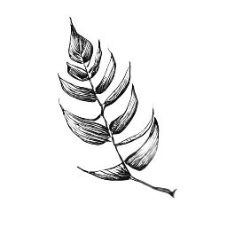

The Diet of the Koala
The Eucalyptus Obliqua Plant
A plant not meant to be eaten
Because eucalyptus leaves hold such little nutritional value, koalas have to ferment the leaves in their guts for days on end. Unlike their brains, they have the largest hind gut to body ratio of any mammal. Many herbivorous mammals have adaptations to cope with harsh plant life taking its toll on their teeth, rodents for instance have teeth that never stop growing, some animals only have teeth on their lower jaw, grinding plant matter on bony plates in the tops of their mouths, others have enlarged molars that distribute the wear and break down plant matter more efficiently... Koalas are no exception, when their teeth erode down to nothing, they resolve the situation by starving to death, because they're fucking terrible animals.
Being mammals, koalas raise their joeys on milk - admittedly, one of the lowest milk yields to body ratio. When the young joey needs to transition from rich, nourishing substances like milk, to eucalyptus - a plant that seems to be making it abundantly clear that it doesn't want to be eaten - it finds it does not have the necessary gut flora to digest the leaves. To remedy this, the young joey begins nuzzling its mother's anus until she leaks a little diarrhoea - actually fecal pap, slightly less digested - which he then proceeds to slurp on. This partially digested plant matter gives him just what he needs to start developing his digestive system. Of course, he may not even have needed to bother nuzzling his mother. She may have been suffering from incontinence. Why?